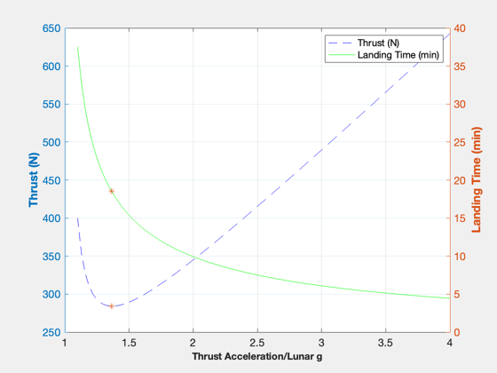
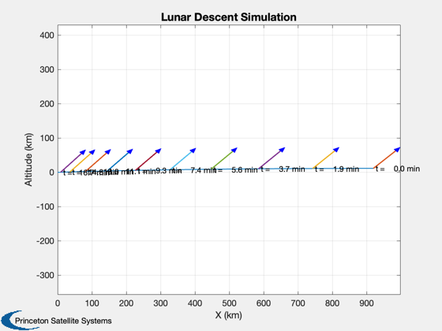

Lunar mission planning
Compute transfer delta-Vs and simulate a lunar landing starting from low Earth orbit. The entire spacecraft lands, there is no portion left in lunar orbit. The steps are:
- Set the elements and date so that transfer orbit and lunar orbit match.
- Compute the insertion delta-v
- Circularize the lunar orbit
- Do a Hohmann descent to the powered landing altitude
- Do a powered landing using BilinearTangent
See also RARP2A, RPRA2AE, DVHoh, RVOrbGen, EarthMoon, TrajectoryPlot, RocketMass, Period, RV2El, VOrbit, CEcl2Eq, PlanetPosJPL, BilinearTangentLaw, Constant, CreateHTMLTable, DisplayLatexTable, NewFig, TimeLabl, XLabelS, Date2JD, RK4, Mag -------------------------------------------------------------------------
Contents
%-------------------------------------------------------------------------- % Copyright (c) 2014 Princeton Satellite Systems % All Rights Reserved. %--------------------------------------------------------------------------
Constants and parameters
The lander spacecraft is small, only 30 kg. We will be working in Earth-centered ecliptic coordinates for the transfer. The moon has a constant inclination with respect to the ecliptic plane.
rMoon = Constant('equatorial radius moon'); muMoon = Constant('mu moon'); gEarth = Constant('accel grav mks'); muEarth = Constant('mu earth'); kMToM = 1000;
ATK Star 26B TE-M-442-1
iSpSolid = 271.7; fSSolid = 0.09; insEngine = 'ATK Star 26B TE-M-442-1'; % hDescent is the altitude from which you begin the descent leg. Allow for % the highest point on dark side, which is 6.5 km higher than Mons Huygens % (altitude 4.7 km), and allow a margin of 0.3 km hDescent = 6.5 + 4.7 + 0.3; % Lunar orbit altitude hLunarOrbit = 200; % Initial LEO altitude rEarthParking = 7000; % Adjust this date until the orbits match jD0 = Date2JD( [2016 5 13 18 30 0] ); % Work in the ecliptic frame PlanetPosJPL( 'initialize', 10 ); [rJPL, mu, vJPL] = PlanetPosJPL( 'update', jD0, 1 ); elM = RV2El(rJPL,vJPL); % Dry mass of the lander massDry = 30; % Specific impulse of the ECAPS LMP-103 engine iSp = 285;
Transfer orbit
Generate a transfer orbit so that apogee is behind the moon. We need to match longitude, argument of perigee and inclination.
rLunarOrbit = hLunarOrbit + rMoon; rA = elM(1)*(1+elM(5)) + rMoon + rLunarOrbit; rP = rEarthParking; [aT,eT] = RPRA2AE( rP, rA ); t = linspace(0,Period(aT)/2,1000); [rM, vM] = RVOrbGen(elM,t); % Lunar orbit [r, v] = RVOrbGen([aT elM(2:4) eT 0],t); vTP = VOrbit(rP,aT); % Transform into ECI for simulation purposes %------------------------------------------- cEclToECI = CEcl2Eq( jD0 ); fprintf(1,'rECI = [%12.4f;%12.4f;%12.4f]\n',cEclToECI*r(:,1)); fprintf(1,'vECI = [%12.4f;%12.4f;%12.4f]\n',cEclToECI*v(:,1)); dVIns = vTP - sqrt(muEarth/rEarthParking); % Plot the trajectory for the Earth/Moon transfer %------------------------------------------------ jD = jD0 + t/86400; % in days EarthMoon( r, jD, [1, 1], rM );
rECI = [ 6032.9050; 3398.1555; 1027.9092] vECI = [ -5.3643; 8.6263; 2.9659]

Compute the delta-vs
% Insertion from LEO %------------------- rP = rMoon+hLunarOrbit; rA = Mag(r(:,end)-rM(:,end)); aM = RARP2A( rP, rA ); vA = VOrbit( rA, aM, muMoon ); vInf = Mag(vM(:,end) - v(:,end)); vM = sqrt(vInf^2 + muMoon/rA); dV = []; dV(1) = abs(vM-vA); % Circularization of the lunar orbit %----------------------------------- vE = VOrbit( rA, aM, muMoon ); vC = sqrt(muMoon/rA); dV(2) = abs(vC - vE); % Hohmann from lunar orbit altitude to hDescent %---------------------------------------------- dV(3) = DVHoh( rLunarOrbit, rMoon+hDescent, vC, muMoon );
Powered descent using the bilinear tangent
% Find the thrust direction angles %--------------------------------- g = muMoon/rMoon^2; u = sqrt(muMoon/(rMoon+hDescent)); % Find the minimum descent thrust for a range of acceleration ratios %------------------------------------------------------------------- % Ratio of engine acceleration to lunar gravity nAccel = linspace(1.1,4); % Size arrays tPeak = zeros(1,length(nAccel)); tLand = zeros(1,length(nAccel)); % Steps for the bilinear tangent nSteps = 2000; for k = 1:length(nAccel) a = nAccel(k)*g; [~, t] = BilinearTangentLaw( u, g, a, hDescent, nSteps ); dV(4) = t(end)*a; % Compute the mass ratio %----------------------- mR = exp(sum(dV)*kMToM/(gEarth*iSp)); massFuel = massDry*(mR-1); % Store results %-------------- tPeak(k) = (massDry+massFuel)*a*1000; tLand(k) = t(end)/60; end % Plot landing thrust and time %----------------------------- NewFig('Landing Thrust and Time'); [AX,H1,H2] = plotyy(nAccel,tPeak,nAccel,tLand); set(get(AX(1),'Ylabel'),'String','Thrust (N)','FontWeight','bold') set(get(AX(2),'Ylabel'),'String','Landing Time (min)','FontWeight','bold') XLabelS('Thrust Acceleration/Lunar g'); set(H1(1),'linestyle','--','color',[0 0 1]) set(H2(1),'linestyle','-', 'color',[0 1 0]) grid on legend('Thrust (N)','Landing Time (min)'); % Generate the trajectory to be used %----------------------------------- [tPeakM,kM] = min(tPeak); nAccelM = nAccel(kM); tLandM = tLand(kM); acc = nAccelM*g; axes(AX(1)); hold on; plot(AX(1),nAccelM,tPeakM,'*'); axes(AX(2)); hold on; plot(AX(2),nAccelM,tLandM,'*'); [beta, t] = BilinearTangentLaw( u, g, acc, hDescent, nSteps ); dV(4) = t(end)*acc; % Compute the mass ratio %----------------------- mR = exp(sum(dV)*kMToM/(gEarth*iSp)); massFuel = massDry*(mR-1);
Insertion delta-V
uE = iSpSolid*g; [mF, mT] = RocketMass( iSpSolid, massFuel+massDry, fSSolid, dVIns ); iIns = iSpSolid*gEarth*mF/4.448;
Print transfer results
clear s k = 1; s{k,1} = 'Julian Date'; s{k,2} = sprintf('%9.2f days',jD0); k = k + 1; s{k,1} = 'Transfer Orbit $\Delta V$'; s{k,2} = sprintf('%4.2f km/s',dVIns); k = k + 1; s{k,1} = 'Transfer stage mass'; s{k,2} = sprintf('%4.2f kg',mT); k = k + 1; s{k,1} = 'Insertion Impulse'; s{k,2} = sprintf('%4.2f lbf-s',iIns); k = k + 1; s{k,1} = 'Insertion Engine'; s{k,2} = insEngine; k = k + 1; s{k,1} = 'Transfer Orbit $\Delta V$'; s{k,2} = sprintf('%4.2f km/s',dVIns); k = k + 1; s{k,1} = 'V$_infty$'; s{k,2} = sprintf('%4.2f km/s',vInf); k = k + 1; s{k,1} = 'Perigee altitude lunar orbit'; s{k,2} = sprintf('%4.2f km',rP-rMoon); k = k + 1; s{k,1} = 'Circular orbit altitude'; s{k,2} = sprintf('%4.2f km',hLunarOrbit); k = k + 1; s{k,1} = 'Descent orbit altitude'; s{k,2} = sprintf('%4.2f km',hDescent); k = k + 1; s{k,1} = 'Insertion $\Delta V$'; s{k,2} = sprintf('%4.3f km/s',dV(1)); k = k + 1; s{k,1} = 'Circularization $\Delta V$'; s{k,2} = sprintf('%4.3f km/s',dV(2)); k = k + 1; s{k,1} = 'Orbit lowering $\Delta V$'; s{k,2} = sprintf('%4.3f km/s',dV(3)); k = k + 1; s{k,1} = 'Landing $\Delta V$'; s{k,2} = sprintf('%4.2f km/s',dV(4)); k = k + 1; s{k,1} = 'Mission total $\Delta V$'; s{k,2} = sprintf('%4.2f km/s',sum(dV)); k = k + 1; s{k,1} = 'Mass dry'; s{k,2} = sprintf('%4.2f kg',massDry); k = k + 1; s{k,1} = 'Mass fuel'; s{k,2} = sprintf('%4.2f kg',massFuel); k = k + 1; s{k,1} = 'I$_sp$'; s{k,2} = sprintf('%4.2f sec',iSp); k = k + 1; s{k,1} = 'Peak thrust'; s{k,2} = sprintf('%4.2f N',tPeakM); k = k + 1; s{k,1} = 'Acceleration ratio'; s{k,2} = sprintf('%4.2f',nAccelM); k = k + 1; s{k,1} = 'Landing time'; s{k,2} = sprintf('%4.2f min',tLandM); thisPath = fileparts(mfilename('fullpath')); CreateHTMLTable(s,fullfile(thisPath,'MoonMission')) DisplayLatexTable(s);
Julian Date 2457522.27 days
Transfer Orbit $\Delta V$ 3.04 km/s
Transfer stage mass 496.22 kg
Insertion Impulse 202139.61 lbf-s
Insertion Engine ATK Star 26B TE-M-442-1
Transfer Orbit $\Delta V$ 3.04 km/s
V$_infty$ 0.78 km/s
Perigee altitude lunar orbit 200.00 km
Circular orbit altitude 200.00 km
Descent orbit altitude 11.50 km
Insertion $\Delta V$ 0.582 km/s
Circularization $\Delta V$ 0.282 km/s
Orbit lowering $\Delta V$ 0.736 km/s
Landing $\Delta V$ 2.46 km/s
Mission total $\Delta V$ 4.06 km/s
Mass dry 30.00 kg
Mass fuel 98.40 kg
I$_sp$ 285.00 sec
Peak thrust 284.20 N
Acceleration ratio 1.36
Landing time 18.55 min
Simulate the landing
beta is the thrust vector angle from the horizontal. We need to flip the results for a landing as the default is an ascent.
% Flip for a landing %------------------- beta = fliplr(beta); dT = t(2) - t(1); % Size the plotting array %------------------------ n = length(beta); xP = zeros(2,n); % Initial state %-------------- x = [0;hDescent;-u;0]; % Simulate %--------- for k = 1:n xP(:,k) = x(1:2); x = RK4('RHSPlanetTakeoff',x,dT,0,acc,g,beta(k)); end xP(1,:) = xP(1,:) - min(xP(1,:)); % Plot the simulation results %---------------------------- t = TimeLabl(t); u = [cos(beta);sin(beta)]; TrajectoryPlot(xP,t,u,'ylabel','Altitude (km)','xlabel','X (km)',... 'title','Lunar Descent Simulation', 'time units','min'); %-------------------------------------- % PSS internal file version information %-------------------------------------- % $Id: 9e60b2e17071d6af53be6e83f2fee7e8930f8f98 $